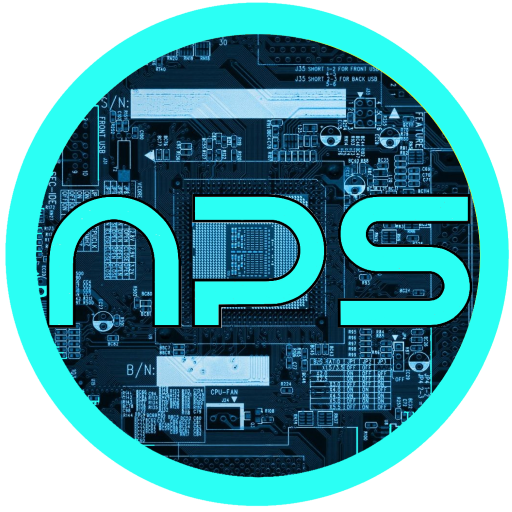

These are personal projects I've undertaken, and organizations/events I've contributed to. Most are open-source, and can be found on my GitHub.
Pixeloca
A public photo-sharing Android app featuring location-tagging, for neighbourhoods.
Software stack: For website: Java, Firebase, Android API

NPSConnect
A learning management system implemented as a web application and companion Android app. NPSConnect features audio summaries of high school textbooks and online homework and assignment management. It facilitates student-teacher interaction in the form of virtual "office hours" through the use of an IRC plugin.
Software stack: For website: LAMP (Linux, Apache, MySQL, PHP) For Android app: Java, XML, Google Drive REST API
The Farmer's Market
A web app that provides real time government crop procurement prices and weather information to rural Indian farmers, via SMS, through web scraping. As a result, this eliminates middlemen from the process and enables farmers to be fairly compensated for their produce. Note: The app was not brought into the market.
Software stack: Java ServerPages, Python, MySQL, Apache

SimpleCabs
A taxicab aggregator in Node.js using the Cheerio web scraping module. It compares cab fares, online reviews (found by scraping websites), as well as the area serviced by each operator, and finally suggests a service for the user. There were plans to integrate booking cabs directly, however, due to lack of OAuth support on major taxicab company websites, we were not able to authenticate users.
Software stack: Node.js, MySQL, Google Maps REST API
HeartnetIndia
Developed and designed an online appointment scheduling system, and cardiac risk factor and physician onboarding survey forms for a pilot tele-ECG screening program, at HeartnetIndia.
Software stack: Node.js, Express+Multer, AJAX, HTML, CSS